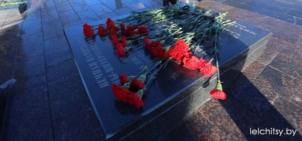
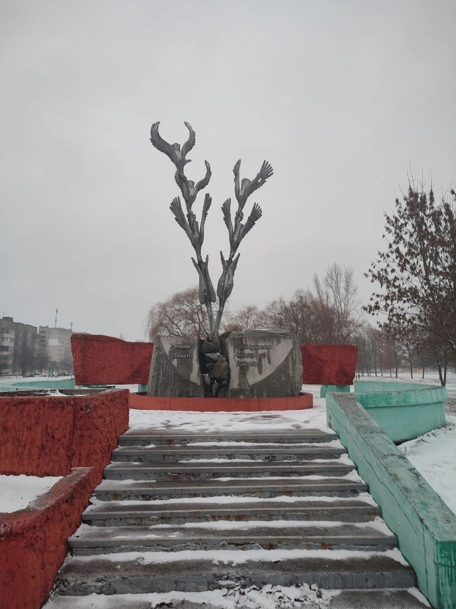
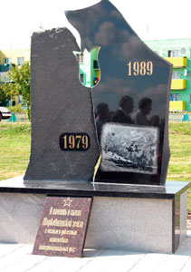

Вечная память павшим!
Памятники...
➤
Война - явление страшное, жестокое. Но пока существуют на Земле злоба, ненависть, будут существовать и войны, которые наносят раны людям, уносят из жизни сыновей.
Белорусским людям свойственна особая любовь к родному краю, к месту, где они выросли, к своей Родине. Эта любовь испокон веков проявляется в их готовности защищать, не жалея жизни, свое отечество. В нашем народе живет убеждения, что истинный человек и сын Отечества есть одно и то же. Патриотизм, любовь к Родине, преданность ей, стремление защищать ее от врагов, своими делами служить ее интересам - чувство великое и необходимое, чувство Великое и необходимое, чувство долга.
В юго-западной части города в 2003году, по улице 60 лет БССР, на просторной, идеально круглой площадке возведена белоснежная часовня с арочными проёмами, увенчанная тёмным куполом с золотым восьмиконечным крестом.
В центральной части часовни, посвящённой памяти воинов-афганцев, на высоком постаменте, облицованном красным гранитом, находится обобщённый образ скорби: обращённые к четырём сторонам света женские лики со слезой, стекающей по щеке.
По улице Лазурная в гимназии №51 «воином интернационалистом» Чайкуном С.А. был создан музей памяти афганской, алжирской и др. войн.
Почти 15 000 советских воинов погибли на той необъявленной войне, среди них – 17 жлобинчан: рядовые Николай Блинцов, Олег Волосович, Анатолий Дроздов, Николай Костейков, Виктор Леонов, Павел Микулко, Виктор Науменко, Геннадий Римарев, Александр Семенец, Александр Лукомский, Николай Старостов, Сергей Флоризяк, Игорь Шеробурко, ефрейторы Сергей Рыбченко, Игорь Карабанов, младший сержант Пётр Зинкович и капитан Александр Бондарев. На бульваре Металургов для них возведен памятник.
Мемориал посвящен воинам-интернационалистам, его изготовило ОАО «ГЗЛИН». Камень с памятной табличкой создали по инициативе союза ветеранов войны в Афганистане и депутата Палаты представителей Александра Данченко. Министерство обороны Беларуси помогло установить рядом с памятником боевую машину десанта "Нона".
г.п Корма
Ещё одна находка ждала нас с ребятами в Кормянском районе. Мемориальные доски, как дань памяти о выпускниках, расположились в ГУО СОШ 1 г.п. Кормы.
г.Лельчицы
А это уже братская могила, тоже Лельчицы. Здесь похоронены воины ВОВ и умершие в Афганистане солдаты.
Наши учащиеся продолжают исследовательскую работу посвященную Дню памяти воинов - интернационалистов. Теперь это Лельчицы. Памятник воинам-интернационалистам, погибшим в Афганистане, открытый в Лельчицах в июле 2013 года, расположен на улице Советской. Он представляет собой гранитную плиту с изображением солдат и вертолета. На мемориальной плите перечислены имена солдат – уроженцев Лельчицкого района, погибших в Афганистане.
 В сквере по ул.Молодежная находится памятник воинам-интернационалистам. Автор проекта заслуженный работник культуры БССР, лауреат Государственной премии Республики Беларусь Э.К.Агунович, скульптор В.И.Слободчиков Основу композиции памятника составляют 7 падающих вниз журавлей. Вытянув шеи и сложив крылья один за одним /4 слева, 3 справа/ падают они в расщелину между двумя серыми гранитными глыбами, символизирующими исламский фундаментализм. На глыбах надпись: «Сынам Рэчыцы, загінуушым далека ад Радзімы».
Монумент установлен на насыпи и помещен внутри круглой бетонной площадки диаметром 4,5 метра. Высота его – 7,5 метров. Памятник-символ увековечивает память о семи речичанах, погибших в военных конфликтах за пределами Родины: Аржановский А.Л., Воронин С.А., Гармоненко А.Н., Пинчук В.Г., Сыч Ф.Г., Чернейко С.С. – воины-интернационалисты, погибшие в Демократической Республике Афганистан и Борсук А.Р.- погибший в Сирии.
.jpg) Памятник воинам-интернационалистам в Светлогорске находится на площади Победителей. Это название весьма символично, поскольку рядом расположен другой военный монумент – Скорбящий колокол, посвященный уроженцам Светлогорска, погибшим во Время второй мировой войны.
Памятник воинам-интернационалистам в Светлогорске находится на площади Победителей. Это название весьма символично, поскольку рядом расположен другой военный монумент – Скорбящий колокол, посвященный уроженцам Светлогорска, погибшим во Время второй мировой войны.
Памятник воинам-интернационалистам был открыт 2 июля 1994 года. Светлогорцы называют его «памятник воинам-афганцам».
Рядом расположен другой военный монумент – Скорбящий колокол, посвященный уроженцам Светлогорска, погибшим во Время второй мировой войны.
Конфликт в Афганистане также стоил жизни десяткам жителей города, еще больше были ранены. В память о них решено было воздвигнуть памятник воинам-интернационалистам в Светлогорске. Он включает в себя фигуры двух солдат, олицетворяющие боевое братство, а также композицию из камней как символ афганских гор, где проходили основные боевые действия.
Спроектирован памятник минскими архитекторами А. Кострюковым и В. Ждановым. Это место, куда возлагают цветы новобрачные, куда приходят поклониться памяти воинам погибшим в локальных воинах.
Рядом с памятником стоит боевая машина десанта БМД-1. По инициативе светлогорских воинов-афганцев исполком и военкомат ходатайствовали перед Министерством обороны о выделении из базы хранения одной такой единицы. Силами работников коммунального хозяйства «бээмдэшка» была приведена в надлежащий вид и заняла своё место на Набережной.Памятник воинам-интернационалистам в Светлогорске на набережной реки Березина.
Мемориальный комплекс на искусственном острове с арочным мостом был заложен в 1988-м, ещё до окончания афганской войны, и полностью завершён в 1996-м.
Центром памятной композиции стала высокая часовня с плавными обводами. Её очертания воспроизводят первоначальные контуры древнего Спасо-Преображенского храма в Полоцке.
Внутренние стены часовни украшены цветными фресками, там же находятся скульптурные группы, посвящённые Святой Матери-Беларуси и сынам нашей земли, павшим в боях за её пределами. Здесь размещены рельефные литые надписи, которыми увековечена 771 фамилия, связывающая Беларусь с войной в Афганистане. Эти имена принадлежат погибшим уроженцам республики и призванным в состав ограниченного контингента с белорусской земли, а также похороненным в наших краях участникам афганских событий.
В Храме-памятнике в честь Всех святых и в память о жертвах, спасению Отечества нашего послуживших, строительство которого началось в 2006 году, есть крипта, где собрана земля с мест погребения воинов-белорусов, погибших вдали от Родины.
Здесь хранятся и капсулы с землей, привезенной из пяти провинций Афганистана, в которых воевали солдаты-интернационалисты из Беларуси. Они были заложены в крипту в 2015 году.
На Острове слез проходят ежегодные акции в память о воинах-интернационалистах.
 На берегу Днепра возвышается часовня-ротонда со светлыми опорами и тёмным куполом. На фронтальном портике размещена рельефная надпись: «ВОІНАМ-ІНТЭРНАЦЫЯНАЛІСТАМ». Под сенью купола установлена скульптурная композиция, центром которой стала сидящая на троне с резной ажурной спинкой Мать-Беларусь. С обеих сторон к её коленям припадают воины, погибшие на прошлых и недавних войнах. На постаменте надпись: «СЛАЎНЫМ СЫНАМ АЙЧЫНЫ – УДЗЯЧНАЯ МАЦІ-БЕЛАРУСЬ».
На берегу Днепра возвышается часовня-ротонда со светлыми опорами и тёмным куполом. На фронтальном портике размещена рельефная надпись: «ВОІНАМ-ІНТЭРНАЦЫЯНАЛІСТАМ». Под сенью купола установлена скульптурная композиция, центром которой стала сидящая на троне с резной ажурной спинкой Мать-Беларусь. С обеих сторон к её коленям припадают воины, погибшие на прошлых и недавних войнах. На постаменте надпись: «СЛАЎНЫМ СЫНАМ АЙЧЫНЫ – УДЗЯЧНАЯ МАЦІ-БЕЛАРУСЬ».
Монументы, возведённые в память участников афганской войны, к настоящему времени есть не только в областных и районных центрах, но также в малых городах Беларуси.
15 февраля у каждого из этих памятников пройдут торжественные мероприятия, прозвучат оружейные салюты, будут возложены венки и цветы.
Бобруйск
Памятник воинам-интернационалистам, г. Браслав.
Торжественное открытие памятного знака состоялось в ноябре 2011 года в г. Браславе на пересечении улиц Садовой и Октября.
Памятник представляет собой боевую машину десанта.
В церемонии открытия памятного знака приняли участие представители Министерства обороны Республики Беларусь, областной и районной организации воинов-«афганцев», 103-й гвардейской отдельной мобильной бригады, военного комиссариата Витебской области.
Брест, Парк воинов-интернационалистов.
У входа в парковую зону по ул. Московской на высоком постаменте стоит бронетранспортер БТР-60. Это реальная боевая техника, которая в своё время была задействована в Афганистане.
Правее постамента с БТР в глубину парка уходит сосновая аллея. Она ведёт к скульптурному монументу, посвящённому памяти воинов-афганцев. Центральным элементом объёмной композиции серо-стального цвета стала мужская фигура, застывшая в последней попытке раздвинуть горные уступы.
Мемориал памяти погибших воинов-интернационалистов, г. Верхнедвинск.
Открытие мемориала памяти погибших воинов-интернационалистов состоялось 3 июля 2012 года в г. Верхнедвинске.
В основе мемориала находится боевая машина пехоты (БМП-1) – как символ основного вида техники, которая принимала участие в боевых действиях в Афганистане. На табличке, прикрепленной к декоративному валуну, начертаны слова, автором которых стал верхнедвинский поэт и краевед Анатолий Бубало – «Свой доўг цаной жыцця вы здзейснілі, салдаты, і вечнай памяццю вярнуліся дахаты».
Витебск
B Витебске улицы названы именами воинов-интернационалистов, погибших в Республике Афганистан.
Витебск, перекрёсток улиц Воинов-интернационалистов и Чкалова
На улице Воинов-интернационалистов расположен памятник «Боль». Автор-витебский скульптор Иван Владимирович Казак. Установлен 2 августа 1997 года.
Литая скульптурная группа «Боль», размещённая в южной части областного центра, своими очертаниями воспроизводит коленопреклонённую, скорбящую мать с телом сына, перевитым повязками, словно погребальными пеленами. Рядом расположена часовенка, а по обеим сторонам аллеи, ведущей к памятнику, на горизонтальных стелах, облицованных чёрным гранитом, размещены рельефные мемориальные надписи с именами 150 жителей города и области, погибших в Афганистане. Со временем здесь поднимутся к небу 150 деревьев, высаженных в их память.
На улице Доватора, на стене гимназии № 1, в 1997 году установлена мемориальная доска в честь погибшего воина-интернационалиста Ефименко- лейтенанта, бортмеханика самолета АН-26. Он был сбит ракетой 24 июня 1988 г в районе г.Баграм Республики Афганистан. На территории воинской части 52287 установлен бюст Герою Советского Союза ефрейтору Александру Владимировичу Корявину. Установлен в июле 2003 г. Погиб в 1988 г. Памятник-бюст Герою Советского Союза Николаю Васильевичу Чепику установлен в г. Витебске на территории 103-й гвардейской отдельной мобильной бригады воинской части 52287. Скульптор А. Н. Гвоздиков. Дата открытия декабрь, 2004
Памятник авиаторам 339-го Военно-транспортного авиационного полка, г. Витебск
Памятник авиаторам 339-го Военно-транспортного авиационного полка был открыт 23 июня 2012 года в г. Витебске на углу улиц Гагарина и Журжевской. Памятник выполнен в виде стелы, вверху которой разместилось скульптурное изображение самолета Ил-76, вылетающего из облаков, чуть ниже – орден Суворова, а под ними – склоненное знамя с надписью: «Авиаторам 339-го Военно-транспортного авиационного ордена Суворова III степени полка 3-й гвардейской Военно-транспортной авиационной дивизии». На левой грани стелы упомянуты части обеспечения – 124-й отдельный батальон аэродромно-технического обеспечения и 472-й отдельный батальон связи и радиотехнического обеспечения, на правой грани перечислены Герои Советского Союза – Журавлев В. А., Богомазов Г. И, Никитин А. П., а также Герои Российской Федерации – Сомов С. А., Хайрулин Г. Г., служившие в полку. Авторами памятника стали витебские скульпторы Александр Гвоздиков и Иван Казак.
Памятник-бюст Герою Советского Союза Владимиру Задорожному, г. Витебск
июня 2013 года на территории 103-й гвардейской отдельной мобильной бригады г. Витебска состоялось торжественное открытие бюста Герою Советского Союза, гвардии старшему лейтенанту Владимиру Задорожному, геройски погибшему при выполнении воинского долга в Афганистане. В соответствии с приказом Министра обороны Республики Беларусь он навечно зачислен в списки личного состава бригады. В церемонии открытия приняли участие представители Палаты представителей Национального собрания Республики Беларусь, Министерства обороны Республики Беларусь, местных органов власти, общественного объединения «Белорусский Союз ветеранов войны в Афганистане», ветеранских организаций войны в Афганистане из Российской Федерации, а также родственники Героя Советского Союза, гвардии старшего лейтенанта Владимира Задорожного. Создание и установка бюста осуществлены по инициативе Совета Витебской областной организации общественного объединения «Белорусский союз ветеранов войны в Афганистане».
Мемориал памяти погибшим воинам в Афганистане на территории 103-й гвардейской отдельной мобильной бригады, г. Витебск
Мемориал установлен на территории 103-й гвардейской отдельной мобильной бригады г. Витебска в честь воинов-интернационалистов, погибших при выполнении воинского долга в Афганистане.
Скульптурная композиция, посвященная воинам-десантникам, г. Витебск
Скульптурная композиция, посвященная воинам-десантникам, была открыта 17 октября 2018 года в г. Витебске в парке Победителей. Открытие скульптурного комплекса приурочено ко дню памяти нашего земляка заместителя командующего ВДВ СССР генерал-лейтенанта Ивана Ивановича Лисова, а также 110-летию со дня рождения командующего Воздушно-десантными войсками СССР генерала армии Василия Филипповича Маргелова. Скульптурная композиция состоит из трех частей, одна из которых выполнена в цвете.
Первая часть представляет собой бойца воздушно-десантных войск после прыжка. В правой руке десантник держит автомат Калашникова, а левой собирает стропы парашюта. Купол самого парашюта представляет вторую часть мемориального комплекса, на нем размещены барельефы генералов В. Ф. Маргелова и И. И. Лисова. Третьей составляющей памятника является композиция из берета и тельняшки, сложенных на валуне. Высота бронзовой скульптуры десантника около 3 м. Фигура десантника изображена в момент собирания строп после прыжка. Перед скульптурой размещен парашют, на котором по центру эмблема ВДВ, а над ней девиз «Никто, кроме нас». На парашюте справа от эмблемы находится барельеф командующего ВДВ СССР генерала армии Василия Маргелова, а слева – уроженца Витебска генерал-лейтенанта Ивана Лисова, который был правой рукой Маргелова. Перед парашютом на камне лежит выполненная в цвете тельняшка и голубой берет. Вдохновителем создания этих атрибутов ВДВ был Иван Лисов, в день памяти которого и открыли скульптурную композицию (умер 17 октября 1997 года). Автор скульптурной композиции Иван Казак. Известный витебский скульптор создал собирательный образ воина, видя перед собой настоящего экипированного десантника. Первоначальный эскиз дорабатывался в соответствии с замечаниями художественно-экспертного совета и самих десантников.
А так же мемориальные именные доски:
Мемориальная доска Белицкому Леониду НиколаевичуМемориальная доска Вороновичу Виктору Михайловичу
Мемориальная доска Даниленко Александру Георгиевичу
Мемориальная доска Дольникову Виктору Алексеевичу
Мемориальная доска Ефименко Александру Владимировичу
Мемориальная доска Козовому Игорю Васильевичу
Мемориальная доска Королеву Александру Ивановичу
Мемориальная доска Пименову Василию Васильевичу
Мемориальная доска Короткину Сергею Владимировичу
Мемориальная доска Ружинскому Сергею Васильевичу
Мемориальная доска Скобову Анатолию Ниолаевичу
Мемориальная доска Спелову Сергею Юрьевичу
Мемориальная доска Тувальскому Олегу Ришардовичу
Мемориальная доска Чернышеву Сергею Ивановичу
Мемориальная доска Млявому Степану Петровичу
г. Докшицы
Памятник воинам-интернационалистам, г. Докшицы Памятник воинам-интернационалистам был открыт 19 августа 2012 года в г. Докшицы. Скульптурная композиция представлена в виде двух скорбящих людей, высеченных из черного гранита, которых скрепляет черный тюльпан. Автором проекта стала преподаватель Докшицкой школы искусств Людмила Лейчинская, а скульптуру выковал известный докшицкий кузнец Иван Соколовский. Районная ветеранская организация стала инициатором создания памятного знака.
г. Дубровно
Памятный знак воинам-интернационалистам, г. Дубровно
Памятный знак воинам-интернационалистам был открыт 20 сентября 2013 года в г. Дубровно в сквере по ул. Первомайской, возле СШ № 2. Композиция представляет собой большой черный камень, символизирующий черную, обгоревшую в пламени беспощадной войны афганскую землю, с надписью «Нашим землякам, принявшим участие в боевых действиях на территории Афганистана и других государств». 90 парней Дубровенщины выполняли интернациональный долг в Афганистане. Одному из них – Николаю Ивановичу Исакову – навеки останется 20 лет.
Торжественное мероприятие открытия провели с участием гостей из Витебской областной организации ветеранов войны в Афганистане, а также местных школьников. Памятный знак открыт в канун Международного дня мира. Средства на его изготовление выделил Белорусский фонд мира.
г. Миоры
Знак воинам, погибшим в Афганистане «Черные тюльпаны»
Традиционно 15 февраля возле памятного знака «Черные тюльпаны» на площади Погибших бойцов отмечается день вывода советских войск из Афганистана. Мероприятия проводятся с участием воинов-интернационалистов, членов семей «афганцев», представителей общественности.
г. Новолукомль
Памятный знак воинам-интернационалистам, г. Новолукомль
Памятный знак воинам-интернационалистам был открыт в 2009 году в г. Новолукомле Чашникского района. Скульптурная композиция высотой 3 м и шириной 1,2 мвыполнена из гранита в виде пятиконечной звезды, рассеченной внизу, с развевающимся знаменем. На стеле памятного знака выполнена надпись «Воинам-интернационалистам».
Торжественное открытие памятного знака было приурочено к 20-летию вывода войск из Афганистана. Автором композиции является витебский скульптор Азат Торосян.
Синициативой создания памятника выступили воины-афганцы Новолукомля. Местные власти поддержали это предложение, так как в боевых действиях в Афганистане участвовали 115 военнослужащих – жителей Чашникского района. За время войны шестеро из них погибло, многие получили ранения, 36 награждены боевыми орденами и медалями. В настоящее время в районе проживают около 100 воинов-афганцев.
г. Лиозно
Памятный знак воинам-интернационалистам, г. п. Лиозно
Открытие памятного знака воинам-интернационалистам состоялось в мае 2010 года в г. п. Лиозно.
На мероприятии открытия присутствовали представители исполнительной власти района, военного комиссариата, ветеранских и общественных организаций, воины-интернационалисты и члены семей погибших, представители Совета областной организации ОО «БСВВА».
гп. Ушачи
Памятник воинам-интернационалистам, г. п. Ушачи
В сентябре 2012 года в Ушачах прошло торжественное открытие памятного знака воинам-интернационалистам. Памятный знак представляет собой гранитную доску, установленную на бронетранспортере.
Идея создания памятника принадлежала самим воинам-интернационалистам и нашла поддержку у органов власти. На торжественном открытии присутствовал председатель районного Совета депутатов, представители областной и районной организаций общественного объединения «Белорусский союз ветеранов войны в Афганистане», жители города.
гп. Шарковщина

Памятный знак воинам-интернационалистам, г. п. Шарковщина
Памятный знак воинам-интернационалистам был открыт 2 августа 2012 г. и находится в сквере ДРБУ-31 в г. п. Шарковщина. Торжественное открытие было приурочено ко Дню воздушно-десантных войск. В мероприятии по открытию памятника приняли участие руководство районного исполнительного комитета, представители военного комиссариата, ветеранских и молодежных организаций, участники боевых действий на территории других государств, делегация областной организации, жители городского поселка.
Гродно, сквер Памяти воинов-афганцев.
Недалеко от входа в сквер со стороны ул. Горького, на площадке, облицованной полированным красным гранитом, расположена литая бронзовая композиция — символ боевого братства. Два воина-товарища, один из которых сжимает в опущенных руках автомат АК-74, навечно застыли у красных гранитных глыб с надписью-посвящением.
Правее скульптурной группы размещены бронзовые таблички с рельефными надписями, где увековечены имена тех, кто погиб в Афганистане.
Памятник воинам-интернационалистам, г. Лепель
Тожественное открытие памятного знака состоялось 9 мая 2009 года в г. Лепеле. На мероприятии открытия присутствовали воины-интернационалисты и члены семей погибших, представители исполнительной власти, военного комиссариата, ветеранских и молодежных организаций, представители Совета областной организации, СМИ, телевидения.
Памятник воинам-интернационалистам, д. Боровка
Памятный знак воинам-интернационалистам был открыт 23 июля 2012 года в деревне Боровка Лепельского района. Стела, установленная на постаменте, представляет собой вертикальную надгробную плиту высотой 1,2 м и шириной 60 см, на лицевой стороне которой изображена колонна бронетранспортеров в сопровождении двух вертолетов на фоне гор. На переднем плане находится автомат Калашникова, панама и надпись «Землякам-интернационалистам».
В открытии памятника приняли участие представители местных органов власти, молодежь, члены районной и областной организации Белорусского союза ветеранов войны в Афганистане.
Памятник воинам-афганцам, д. Заслоново
Открытие памятника воинам-афганцам состоялось в июле 2009 года в д. Заслоново Лепельского района. Комплекс состоит из кургана валунов, символизирующих горы Афганистана, православного креста и черной гранитной мемориальной плиты.
У скульптурной композиции много «авторов»: воины-интернационалисты, союз офицеров, воины 19-й механизированной бригады, 29-й ракетно-зенитной бригады, 52-го отдельного поискового батальона и жители поселка.
На торжественном мероприятии присутствовали начальник идеологического отдела райисполкома, директор Заслоновской школы, жители д. Заслоново.
Новополоцк
3 октября 2002 года в р-не ул. Молодежная, д.153, около магазина «Орбита» , установлен памятник из бронзы воинам-интернационалистам Новополоцка, погибшим в Афганистане. Выполнен скульптором Л.Г.Огановым. Памятник воинам-интернационалистам был установлен в районе гостиницы «Нафтан» на перекрестке улиц Молодежной и Олимпийской. Работа над увековечиванием памяти «афганцев», которые не вернулись в Новополоцк, велась почти 3 года. Трехметровый памятник, отлитый из бронзы, представляет собой звезду, в разломе которой припал на колено солдат. Сегодня каждый желающий может прийти на это место и отдать дань памяти двенадцати погибшим героям-землякам.
В 2007 году состоялось открытие мемориальной доски на здании школы СШ № 2 г. Новополоцка в память о погибших в Афганистане выпускниках Косенко Сергее и Иванько Андрее. 15 февраля 2012 года состоялось открытие мемориальной доски военному летчику, Герою Советского Союза полковнику Василию Щербакову. Памятный знак установлен на здании средней школы № 3 г. Новополоцка, которую окончил Василий Васильевич. Находясь в составе ограниченного контингента советских войск в Афганистане, командовал вертолетной эскадрильей и совершил 318 боевых вылетов. Василий Васильевич Щербаков удостаивался высоких наград, в том числе ордена Ленина, медали «Золотая звезда» и орденов «За службу Родине в вооруженных силах СССР» II и III степени.
Памятный знак в память о военнослужащих 350-го гвардейского парашютно-десантного полка, г. Новополоцк
40 лет назад ограниченный контингент Советской армии был введен в Афганистан. И первый же день принес потери: разбился самолет, в котором находились 37 десантников и 10 членов экипажа.
Чтобы увековечить трагическую страницу далекой войны, на площадке рядом с экспозицией городского музея в Боровухе был открыт памятный знак в память о военнослужащих 350-го гвардйского парашютно-десантного полка.
Орша.
В центре Орши, в сквере, на правом берегу реки Днепр, расположеи памятник воинам-землякам, погибшим при исполнении воинского долга в Афганистане. Два памятных камня с мемориальными досками из бронзы. Открыт 6 марта 1994 года. Автор И.В.Голубев, архитектор В.А.Безенсок.
г.п.Шумилино
В Центральном парке использован природный валун, на котором имеется надпись «Воинам-афганцам Шумилинщины» Установлен в 1994 г. На вершине валуна размещена памятная доска, на которой имеется надпись:
«Мы не ждали звезд на челе,
Не искали на власть притязаний,
И как жить на афганской земле,
Нам никто не давал указаний.
А за светлую, тихую грусть
И за скорбь, что из племени родом,
Ты прости нас, белая Русь:
Мы чисты перед нашим народом».
Вблизи валуна находятся четыре памятные плиты, посвященные погибшим воинам-афганцам.
Мемориальный знак в честь воинов-земляков, погибших в Афганистане, м. Смольяны, Оршанский район
Памятник, павшим в Афганистане землякам-уроженцам был торжественно открыт 31 июля 2004 года в местечке Смольяны Оршанского района. Памятник представляет собой гранитный камень с плитой, на которой нанесены имена погибших: Геннадия Вербицкого, уроженца д. Масюки, Сергея Кривко, уроженца д. Смольяны, Александра Шавня, уроженца д. Парковая. Все трое посмертно награждены орденом Красной Звезды, медалью «Воину-интернационалисту».
Средства на памятник собирались путем пожертвований от разных учреждений, хозяйств и организаций Оршанского района. На торжественном открытии присутствовали представители исполнительной власти района, воины-интернационалисты и учащиеся.
Так же установлены именные мемориальные доски:
Мемориальная доска Круглову Александру Викторовичу
Мемориальная доска Опеко Анатолию Петровичу
Мемориальная доска Панькову Олегу Викторовичу
Мемориальная доска Русаченко Виктору Викторовичу
Мемориальная доска Рыжанкову Игорю Борисовичу
Полоцк
На улице Гукова, дом №3, 15 февраля 2001 года установлена мемориальная доска в честь погибшего воина-интернационалиста рядового Сергея Ивановича Гукова. 14 октября 2004 года состоялось открытие памятника воинам-интернационалистам Полоцкого района. Часовня из красного кирпича. Внутри мраморная плита с фамилиями воинов-интернационалистов. В средней школе №2 открыт музей воинов-интернационалистов. Каплица в память воинам, погибшим в Афганистане, находится в сквере на проспекте Карла Маркса, неподалеку от храма Покрова Пресвятой Богородицы. В день открытия состоялось освящение каплицы упоительной молитвой и святой водой. На стенах каплицы из красного кирпича выбиты имена тех, кто ценою жизни исполнил воинскую присягу. Обелиск воинам-интернационалистам 9-го автомобильного батальона, г. п. Ветрино Обелиск установлен в апреле 1988 года в честь погибших воинов-интернационалистов 9-го автомобильного батальона . На обелиске табличка с надписью: «Вечная память воинам-интернацтоналистам кавалерам ордена Красной Звезды. Младший сержант Федоров Александр Владимирович (1967–1986), рядовой Аникиенко Евгений Владимирович (1967–1986), рядовой Грицков Юрий Владимирович (1967–1986), рядовой Штельмах Олег Васильевич (1967–1986).»
Памятник воинам 9-го отдельного автомобильного батальона, г. п. Ветрино
Памятник воинам-интернационалистам 9-го отдельного автомобильного батальона, погибшим при исполнении воинского долга в Афганистане, был открыт 2 февраля 2019 года в г. п. Ветрино Полоцкого района.
Открытие памятника приурочено к 30-летию вывода советских войск из Афганистана.
Памятный знак высотой около 1,5 м и шириной 3,7 м установлен на центральной аллее возле Дворца культуры в г. п. Ветрино, так как в годы войны 9-й отдельный автомобильный батальон располагался рядом с этим населенным пунктом. Памятник выполнен в виде бронещита, который устанавливался на военные автомобили в Афганистане. В его центре расположены фамилии бойцов, погибших при исполнении воинского долга, внизу – силуэты гор. Перед щитом находится объемная пирамида с каской военного образца и четыре черных тюльпана, которые символизируют жертвы Афганской войны.
В 1986 году 9-й отдельный автомобильный батальон был в полном составе (205 человек и 120 автомобилей) направлен для выполнения служебных задач в Афганистан. На его боевом счету – около 2 млн. км горных дорог, свыше 34 млн. тонн перевезенных грузов, обеспечивающих жизнедеятельность 40-й армии. За мужество и героизм более ста военнослужащих батальона были удостоены орденов и медалей. Четверо военнослужащих были награждены орденами Красной Звезды посмертно: Юрий Грицков, Евгений Аникеенко, Александр Фёдоров, Олег Штельмах.
Скульптурная композиция выполнена специалистами ОДО «Мастак-сервис». Инициатором возведения памятного знака выступил совет Полоцкой районной организации ветеранов войны в Афганистане.